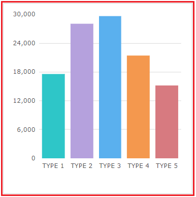
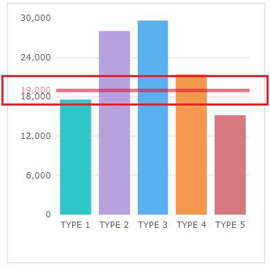
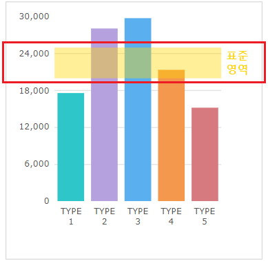
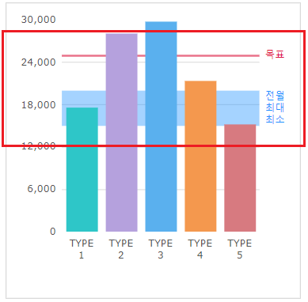

FusionChart의 'addTrendLine' 메소드를 사용하여 트렌드 라인을 설정한 예제입니다. 이 예제는 트렌드 라인의 주요 속성만 설정되었습니다. 세부 설정은 아래의 FusionChart의 가이드를 참고합니다.
FusionChart 가이드 : https://www.fusioncharts.com/dev/fusioncharts
FusionChart의 차트별 속성 : https://www.fusioncharts.com/dev/chart-attributes/
선 형식 트렌드 라인 추가하기
박스 형식 트렌드 라인 추가하기
이중 트렌드 라인 추가하기
버튼을 클릭하고 차트를 확인합니다.
1
STEP 1: 초기 상태를 확인합니다.
예제 영역 '선 형식 트렌드 라인'에 'Column2D' 유형의 FusionChart가 구성되어 있습니다.Image 1.브라우저(Chrome) 실행 예시

2
STEP 2: 선 형식의 트렌드 라인을 추가하고 브라우저에 적용합니다.
'선 형식 트렌드 라인 추가하기' 버튼을 클릭합니다.3
STEP 3: 실행된 결과를 확인합니다.
다음과 같이 7가지의 트렌드 라인 속성이 적용됩니다.
기준 값 '19000'으로 트렌드 라인 생성
좌측에 문자열 '19,000' 표시
트렌드 라인 색 적용
트렌드 라인 굵기 적용
트렌드 라인 투명도 적용
데이터 플롯 위로 표시 적용
트렌드 라인 툴팁 적용
Image 2.브라우저(Chrome) 실행 예시

버튼을 클릭하고 차트를 확인합니다.
1
STEP 1: 초기 상태를 확인합니다.
예제 영역 '박스 형식 트렌드 라인'에 'Column2D' 유형의 FusionChart가 구성되어 있습니다.Image 3.브라우저(Chrome) 실행 예시
2
STEP 2: 박스 형식의 트렌드 라인을 추가하고 브라우저에 적용합니다.
'박스 형식 트렌드 라인 추가하기' 버튼을 클릭합니다.3
STEP 3: 실행된 결과를 확인합니다.
다음과 같이 9가지의 트렌드 라인 속성이 적용됩니다.
시작 값 '20000', 종료 값 '25000'으로 트렌드 라인 생성
트렌드 라인 박스형 적용
우측에 문자열 '표준 영역' 표시
트렌드 라인 색 적용
트렌드 라인 투명도 적용
데이터 플롯 위로 표시 적용
트렌드 라인의 글자 투명도 적용
트렌드 라인의 글자 크기 적용
트렌드 라인의 글자 굵게 적용
Image 4.브라우저(Chrome) 실행 예시

버튼을 클릭하고 차트를 확인합니다.
1
STEP 1: 초기 상태를 확인합니다.
예제 영역 '다중 트렌드 라인'에 'Column2D' 유형의 FusionChart가 구성되어 있습니다.Image 5.브라우저(Chrome) 실행 예시
2
STEP 2: 다중 트렌드 라인을 추가하고 브라우저에 적용합니다.
'다중 트렌드 라인 추가하기' 버튼을 클릭합니다.3
STEP 3: 실행된 결과를 확인합니다.
두 개의 트렌드 라인이 추가되고 각각 적용된 속성은 다음과 같습니다.
첫 번째 트렌드 라인에 적용된 속성은 5가지 입니다.
기준 값 '25000'으로 트렌드 라인 생성
우측에 문자열 '목표' 표시
트렌드 라인 색 적용
트렌드 라인 굵기 적용
트렌드 라인 투명도 적용
트렌드 라인의 글자 투명도 적용
두 번째 트렌드 라인에 적용된 속성은 5가지 입니다.
시작 값 '15000', 종료 값 '20000'으로 트렌드 라인 생성
트렌드 라인 박스형 적용
우측에 문자열 '전월 최대 최소' 표시
트렌드 라인 색 적용
트렌드 라인 투명도 적용
트렌드 라인의 글자 투명도 적용
Image 6.브라우저(Chrome) 실행 예시

FusionChart의 트렌드 라인은 'addTrendLine' 메소드를 사용하여 구현합니다.
FusionChart의 트렌드 라인은 'addTrendLine' 메소드와 'setChartAttribute' 메소드, 'draw' 메소드를 사용하여 스크립트를 작성합니다. 'addTrendLine' 메소드는 트렌드 라인별 속성을 추가할 수 있습니다. 주요 속성으로는 시작 값, 종료 값, 트렌드 라인의 형태 등이 있습니다. 'setChartAttribute' 메소드는 트렌드 라인의 'displayValue' 속성의 글자색, 여백, 배경색 등을 공통으로 지정할 수 있습니다. 'draw' 메소드는 브라우저에 차트를 그리는 기능을 제공합니다.
'addTrendLine' 메소드 호출 시, 적용된 트렌드 라인이 있으면 대체(replace)가 아닌 추가(append)됩니다.
현재 FusionChart에서는 적용된 트렌드 라인을 제거하는 메소드를 제공하지 않고 있습니다.
FusionChart의 차트별 제공하는 속성은 아래의 링크를 통해 확인할 수 있습니다.
다음은 트렌드 라인 추가 시 설정할 수 있는 주요 속성의 스크립트 예시입니다.
Example 1.Script
//예제 파일에서는 스크립트 scwin.btn_exam1_1_onclick, scwin.btn_exam2_1_onclick에 작성되어 있습니다. // 트렌드 라인 속성 var trnOptions = {}; trnOptions.startValue = 20000; // [필수] 시작 값. trnOptions.endValue = 25000; // 종료 값. trnOptions.displayValue = "기준"; // 트렌드 라인에 좌측 또는 우측에 표시할 레이블. trnOptions.color = "#FFD700"; // 색. trnOptions.alpha = 40; // [0-100] 투명도. 속성 'displayValue'도 함께 적용. trnOptions.showOnTop = 1; // [default:0, 1] 데이터 플롯 위로 표시할 지의 여부. trnOptions.valueOnRight = 1; // [default:0, 1] 속성 'displayValue'의 값을 우측에 표시할지의 여부. trnOptions.thickness = 4; // 선 굵기로 px 단위로 적용. 속성 'isTrendZone'이 적용된 경우 무시. // trnOptions.isTrendZone = 1; // [default:0, 1] 속성 'endValue'가 지정된 경우 트렌드 라인을 박스형태로 표시할지의 여부. // Fusionchart 'cht_exam1'의 트렌드 라인을 추가합니다. cht_exam1.addTrendLine(trnOptions); // 속성 'displayValue'의 추가 속성 var attOptions = {}; attOptions.trendValueAlpha = 100; // [0-100] 속성 'displayValue'의 투명도. attOptions.trendValueFontSize = 13; // 속성 'displayValue'의 글자 크기. attOptions.trendValueFontBold = 1; // 속성 'displayValue'의 글자 굵게 적용 여부. attOptions.trendValueFont = ""; // 속성 'displayValue'의 글자체. attOptions.trendValueFontItalic = 1; // 속성 'displayValue'의 글자 기울기 적용 여부. attOptions.trendValueBgColor = "#000000"; // 속성 'displayValue'의 배경색. attOptions.trendValueBgAlpha = 80; // [0-100] 속성 'displayValue'의 배경색 투명도. attOptions.trendValueBorderAlpha = 100; // [0-100] 속성 'displayValue'의 테두리 투명도. attOptions.trendValueBorderColor = "#33333"; // [0-100] 속성 'displayValue'의 테두리 색. attOptions.trendValueBorderPadding = 4; // [0-100] 속성 'displayValue'의 테두리 여백. attOptions.trendValueBorderRadius = 3; // [px 단위] 속성 'displayValue'의 테두리의 모서리 반경. attOptions.trendValueBorderThickness = 0; // [px 단위] 속성 'displayValue'의 테두리의 굵기. // Fusionchart 'cht_exam1'의 속성을 설정합니다. cht_exam1.setChartAttribute(attOptions); // Fusionchart 'cht_exam1'를 브라우저에 그립니다. cht_exam1.draw();
현재 문서의 4.1 필수 확인 사항에 유의 사항과 동작 방식 등이 작성되어 있습니다.
선 형식 트렌드 라인의 스크립트 예시입니다.
Example 2.Script
//예제 파일에서는 스크립트 scwin.btn_exam1_1_onclick에 작성되어 있습니다. // 적용된 트렌드 라인이 있으면 return if (cht_exam1.getJSONData().trendlines) { return; } // 트렌드 라인 속성 var options = {}; options.startValue = 19000; // [필수] 시작 값. options.color = "#DC143C"; // 색. options.alpha = 60; // [0-100]투명도. 속성 'displayValue'도 함께 적용. options.showOnTop = 1; // [default:0, 1] 데이터 플롯 위로 표시할 지의 여부. options.thickness = 4; // 선 굵기로 px 단위로 적용. 속성 'isTrendZone'이 적용된 경우 무시. // Fusionchart 'cht_exam1'를 브라우저에 그립니다. cht_exam1.draw();
현재 문서의 4.1 필수 확인 사항에 유의 사항과 동작 방식 등이 작성되어 있습니다.
박스 형식 트렌드 라인의 스크립트 예시입니다.
Example 3.Script
//예제 파일에서는 스크립트 scwin.btn_exam2_1_onclick에 작성되어 있습니다. // 적용된 트렌드 라인이 있으면 return if (cht_exam2.getJSONData().trendlines) { return; } // 트렌드 라인 속성 var options = {}; options.startValue = 20000; // [필수] 시작 값. options.endValue = 25000; // [필수] 종료 값. options.isTrendZone = 1; // [필수] [default:0, 1] 속성 'endValue'가 지정된 경우 트렌드 라인을 박스형태로 표시할지의 여부. options.color = "#FFD700"; // 색. options.alpha = 40; // [0-100]투명도. 속성 'displayValue'도 함께 적용. // Fusionchart 'cht_exam2'의 트렌드 라인을 추가합니다. cht_exam2.addTrendLine(options); // Fusionchart 'cht_exam2'를 브라우저에 그립니다. cht_exam2.draw();
현재 문서의 4.1 필수 확인 사항에 유의 사항과 동작 방식 등이 작성되어 있습니다.
원하는 트렌드 라인의 개수만큼 속성을 정의하여 'addTrendLine' 메소드를 호출합니다. 다음은 이중 트렌드 라인의 스크립트 예시입니다.
Example 4.Script
// 적용된 트렌드 라인이 있으면 return if (cht_exam3.getJSONData().trendlines) { return; } // 선 형식 트렌드 라인 속성 var trnOptions1 = {}; trnOptions1.startValue = 25000; // [필수] 시작 값. trnOptions1.displayValue = "목표"; // 트렌드 라인에 좌측 또는 우측에 표시할 레이블. trnOptions1.color = "#DC143C"; // 색. trnOptions1.alpha = 60; // [1-100]투명도. 속성 'displayValue'도 함께 적용. trnOptions1.showOnTop = 0; // [default:0, 1] 데이터 플롯 위로 표시할 지의 여부. trnOptions1.thickness = 2; // 선 굵기로 px 단위로 적용. 속성 'isTrendZone'이 적용된 경우 무시. trnOptions1.valueOnRight = 1; // [default:0, 1] 속성 'displayValue'의 값을 우측에 표시할지의 여부. // Fusionchart 'cht_exam3'의 트렌드 라인을 추가합니다. cht_exam3.addTrendLine(trnOptions1); // 박스 형식 트렌드 라인 속성 var trnOptions2 = {}; trnOptions2.startValue = 15000; // [필수] 시작 값. trnOptions2.endValue = 20000; // 종료 값. trnOptions2.displayValue = "전월<br/>최대<br/>최소"; // 트렌드 라인에 좌측 또는 우측에 표시할 레이블. trnOptions2.color = "#1E90FF"; // 색. trnOptions2.alpha = 40; // [1-100]투명도. 속성 'displayValue'도 함께 적용. trnOptions2.showOnTop = 0; // [default:0, 1] 데이터 플롯 위로 표시할 지의 여부. trnOptions2.valueOnRight = 1; // [default:0, 1] 속성 'displayValue'의 값을 우측에 표시할지의 여부. trnOptions2.isTrendZone = 1; // [default:0, 1] 속성 'endValue'가 지정된 경우 트렌드 라인을 박스형태로 표시할지의 여부. // Fusionchart 'cht_exam3'의 트렌드 라인을 추가합니다. cht_exam3.addTrendLine(trnOptions2); // Fusionchart 'cht_exam3'를 브라우저에 그립니다. cht_exam3.draw();
addTrendLine( options )
setChartAttribute( options )
draw( )
getJSONData( )